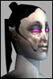

NWvoicesStink!
Leetas
 | Cyclic version of Adv shields I havent seen any cyclic versions of our shiels being dropped from bosses, nor seeing people selling them.
Did the Adventure Cyclic Shields make it into this patch?
Did FC say No NO too ubber, at the last minute?
Am i blind and my client doesnt show "cyclic" in my view? |
tomtemor
Supa Leet
 | Re: Cyclic version of Adv shields quote:
Originally posted by Chinamon
Did the Adventure Cyclic Shields make it into this patch?
Nope...
I was furious when i found them not to be in 14.4 but as always FC must have messed them up last minute and decided to not include them in the patch...
AND MAKE CYCLICS STACK W/ NORMAL SHIELDS!! |
Nosson
Leet
 | You have got to be joking one of the better nano lines for ADV and oops we didn't put it in. |
Kinkstaah
unimpressed by your post
 | Whole bunch of other stuff didnt make it in either (profession specific rings, new weapons, etc etc) |
Destractor
Neutraleet
 | Don't expect them soon.
Remember what is in the DB does not mean it will ever get ingame.
(Kami bot) |
| Cz |  Checking up on these... Checking up on these...We will check up on this, and hand out a reply through the Professionals. |
XtroXtreme
Supa Leet
 | Boss and team loot items that professions need is stupid, needed to say it one more time  , and those items should be avilable in stores as well as normal missions. |


 Last Thread Next Thread
Last Thread Next Thread 
 July 28th, 2002 02:59
July 28th, 2002 02:59